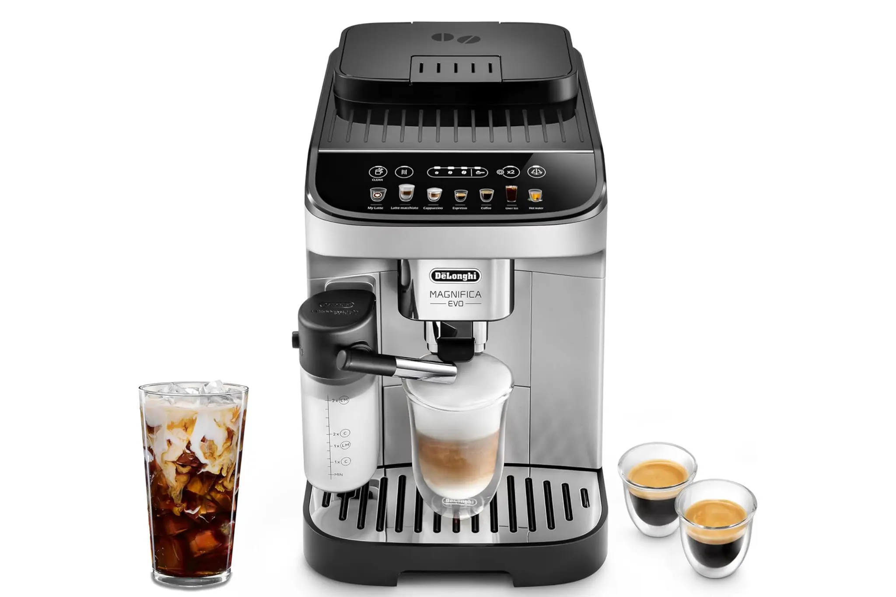
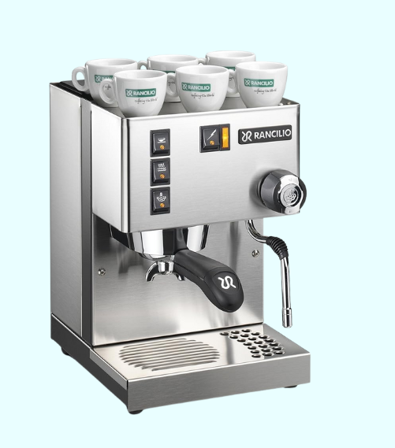
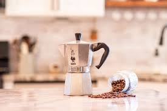
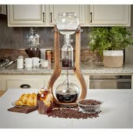
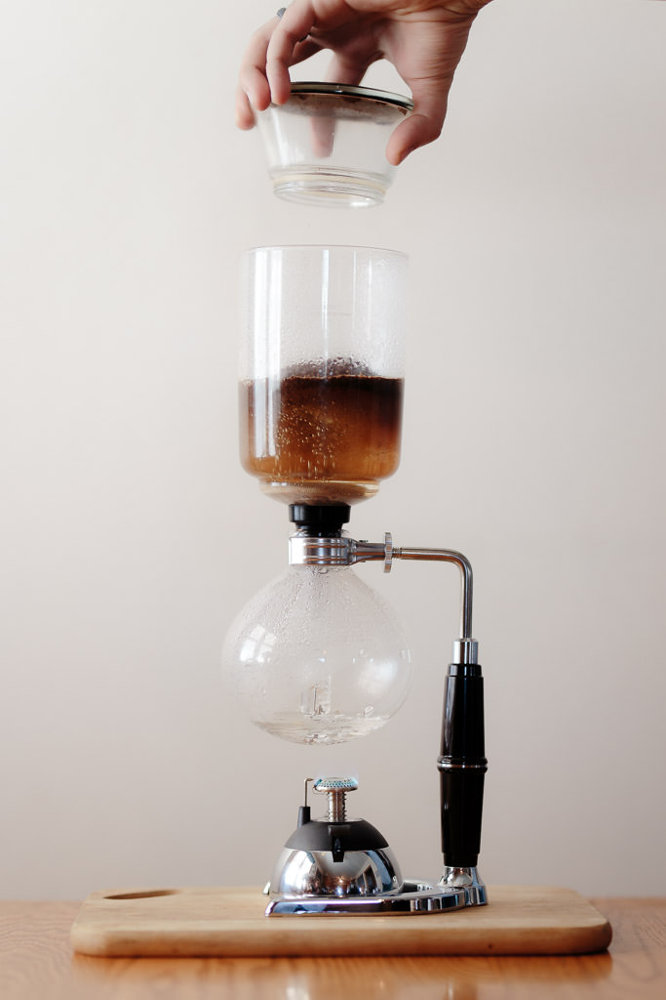
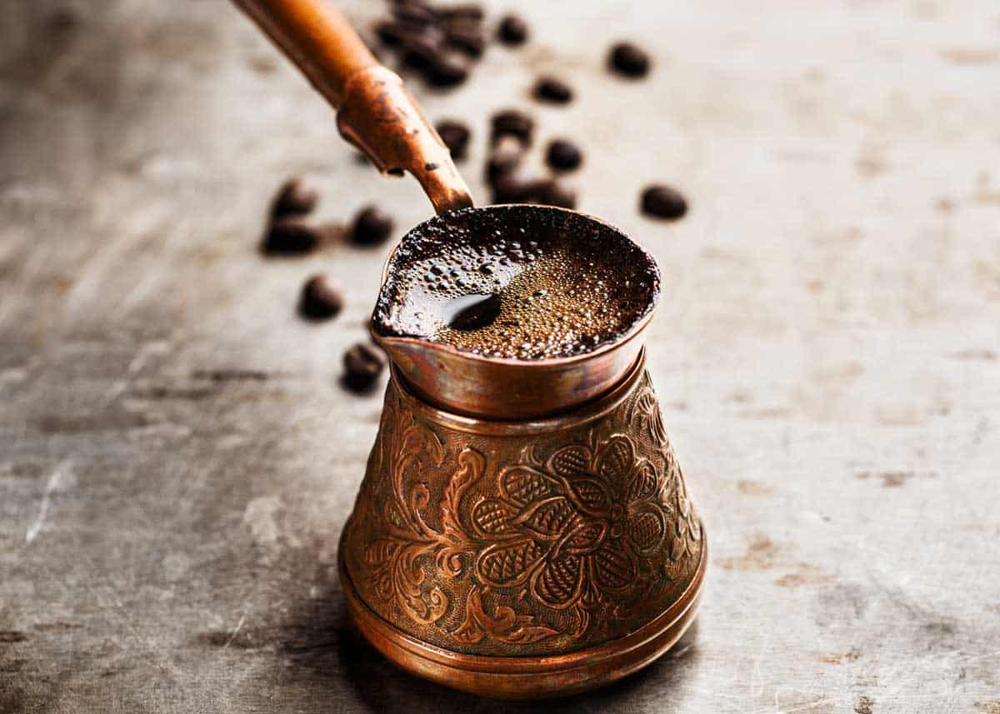
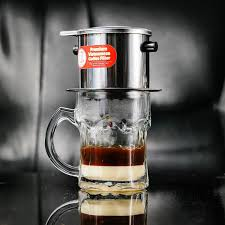
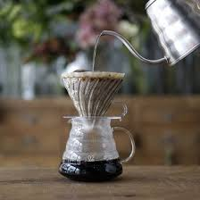
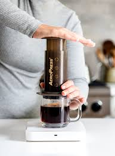

Brewing Equipment

Espresso Machine
High-quality espresso machine for perfect shots every time.

French Press
Ideal for full-bodied coffee with a rich flavor.

Moka Pot
Brews strong coffee by passing boiling water pressurized by steam through coffee grounds.

Cold Brew Maker
Steeps coarsely ground coffee in cold water for 12–24 hours.

Siphon Coffee Maker (Vacuum Pot)
Uses vapor pressure and vacuum suction for theatrical, precise brewing.

Turkish Coffee (Cezve)
Uses open-flame boiling to craft thick, traditional unfiltered coffee.

Vietnamese Phin Filter
Uses slow metal drip to brew strong, sweet coffee right in the cup.

Pour‑Over Dripper (Hario V60)
Uses gravity and controlled pouring for clean, bright, and nuanced flavor.

AeroPress
Uses air pressure to brew smooth, strong coffee in under a minute.